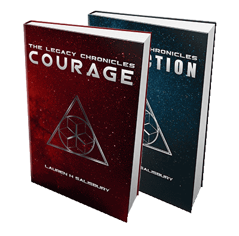

The Legacy Chronicles
When I first decided to quit teaching to become a full time writer, I had ideas for more than one series of books. The first was based on my experiences in the classroom and would have covered my entire teaching career. The second was based on the stories of how various couples in my family met and fell in love.
As I began to talk through what I had in mind with my family, however, an entirely different story kept forcing its way to the front of my thoughts. A series based on the women in Moses’ life who displayed such inspiring acts of faith that they have always been amongst my favourite Biblical characters.
The concept grew to include my love of science-fiction and fantasy, fleshing out without much conscious input on my part. It felt like these stories wanted to be told and wouldn’t leave me alone until I’d written them, even waking me in the middle of the night with new details. I caved. I put aside my original plans and followed the call to write The Legacy Chronicles.
I can only hope that you enjoy reading them as much as I have enjoyed putting them to paper. The characters of the Esarelian Empire and beyond live in a time and place where choosing faith in God over scientific understanding and personal advancement is difficult and often dangerous. The results are… well, why don’t you find out for yourself?
Courage
Can one woman evade an alien empire to save her son’s life?
Gilla and Elias have the perfect life—or as perfect as life can be for slaves living deep in the Esarelian Empire. Elias wants freedom for his precious wife and daughter, and the rest of their people, and he is willing to fight to get it. Pregnant with her second child, Gilla only wants a happy, healthy family who share a strong faith in the God of Old Earth, and to get through her workload each day.
When the Esarelians decide to teach their rebellious slaves a lesson they will never forget,
Gilla’s entire life is turned upside down. She must trust that God has a plan to protect her new-born son,
and have the courage to follow it, choosing the strangest of allies in an effort to ensure his survival.

“Courage is about great characters that have a positive view of God and they’re set in a really cool futuristic world. It doesn’t get much better than that.” 5 stars – Readers Favorite
Conviction
Can two people with opposing principles overcome their differences to be together?
Than has spent his life ostensibly having fun while secretly fighting for his people’s freedom. A member of the underground resistance, he is only ever serious around his comrades and his family. When an injury forces him to step down from active duty and his reluctant nurse sparks his interest, Than finds himself in uncharted territory. The fascinating woman will have nothing to do with him…
Menali’s past has taught her to keep her head down and trust that God has a reason for allowing the human race to suffer on U’du. When Than explodes into her life, he refuses to take no for an answer and challenges all of her preconceptions. He soon has her re-evaluating her priorities and wondering what life with someone like him would be like…

Read the first chapter here:
Who's Who

Gilla
I'd like you to meet Gilla Trestam, the main character in Courage. Here she is, as she appears at the start of the story. I never truly considered how wrong it seemed for Gilla to be doing manual labour while 7 months pregnant until I actually saw her in her uniform. It’s clear that something on planet U’du needs to change – and soon!
Name: Gilla Trestam.
Age: 30 at the start of the series.
Status: Married to Elias, one child (Mira, 7) and pregnant with her second.
Position: Slave worker in the manufacturing sector on planet U’du,
proficient in wiring circuitry and systems testing.
Appearance: Average height (5ft 7in), athletic build, warm brown eyes,
long dark-brown hair reaches to her waist.
Attributes: Calm, nurturing, peace keeper, intelligent,
firm believer in Old Earth’s God, good singing voice.
Favourite Activity: Singing the songs of Old Earth, passed down by her grandmother, to her children.
Reemah
Let me also introduce Ra'hos Reemah, one of the Esarelian characters from Courage. Reemah fills the role of the Egyptian princess in the Biblical account of Moses, and more of her story is told in Strength, the third book in The Legacy Chronicles.
Name: Reemah, First Daughter of Ashal of Esarel.
Age: 256 at the start of the series.
Status: Single
Position: Ra’hos (member of the Esarelian royal family).
Appearance: Tall for a female (8ft approx.), thin, toned, violet eyes signal Ra’hos lineage.
Attributes: Rebellious, intelligent, easily bored, great pilot, craves space and speed,
odd for an Esarelian – doesn’t like political games, feels stifled by her role,
dislikes sycophants, often lonely.
Favourite expression: Solid!
Favourite activity: Racing arrows (military fighter craft).